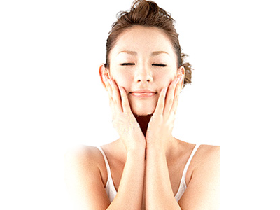

▶【美容】乾燥肌を防ぐためにはどうすればいいですか？
-

冬になるとお肌が乾燥してお手入れが大変ですよね。
そもそも顔・肌の乾燥やかゆみのはなぜ起こるか知っていますか？
そもそも自分の顔・肌の乾燥やかゆみの根本原因を知らないと、どのように乾燥肌を防止して良いかわかりませんよね。ここからはいくつかある顔・肌の乾燥やかゆみの原因についてご紹介します。
・ストレス
日々の仕事や人間関係などでストレスを抱えている方は要注意です。 ストレスは乾燥肌の原因になります。なぜなら、ストレスを溜めこんでしまうとホルモンバランスが崩れてしまい、肌の免疫機能が低下してしまうからです。ストレスを溜め込まないように適度に遊びに行ったりとリフレッシュをした方が良いです。・湿度
冬は空気が乾燥しているので肌から水分が奪われてしまいます。そのため乾燥肌になりやすく、お肌がかゆくなりやすくなってしまいます。夏でもエアコンをつけていると部屋が乾燥してしまい、乾燥肌の原因になってしまいますので、気をつけてください。対策としては、加湿器をつけて空気が乾燥しないようにすることで、乾燥肌の原因を取り除くことができます。・洗顔方法
間違った方法で洗顔をしてしまうと、逆にお肌によくないです。 美しい肌になるために欠かせない洗顔ですが、正しい洗顔の方法・間違った洗顔の方法はしっかりと覚えておいてください。 間違った洗顔の方法としては、例えば、洗顔のやりすぎ・温度の高いお湯での洗顔・洗浄力の高い洗顔料の使用などです。 顔の皮脂が必要以上に洗い流されてしまうと、顔の乾燥肌の原因になってしまいます。なぜなら顔の皮脂は保湿の役割があるため、皮脂がなくなることで肌の水分が失われてしまうからです。 熱いお風呂に入ったり、刺激の強い石けんを使うのもお肌に良くないので注意してください。 正しい洗顔の方法は美女naryのこちらを参考にしてみてください。・スキンケアの方法
肌が乾燥している時に油分が多く含まれたクリームや乳液をつけてしまいがちだと思います。しかしこれでは意味がありません。なぜなら水分を先に補充してからでないと油分に水分が弾かれてしまい、お肌に水分が行き渡らないからです。まずは化粧水などでお肌にしっかりと水分を補給してからクリームや乳液をつけるようにしましょう。・睡眠不足
睡眠不足はお肌の大敵であり、乾燥肌の原因になります。 睡眠不足により疲労が溜まると血行が悪くなり、新陳代謝も悪くなります。 それにより身体の老廃物が出て行かず、肌の状態が悪くなってしまうのです。 睡眠をしっかり取り、肌のターンオーバーが正常に行われるようにすることでお肌が改善されます。ぜひここに書いてあることを実践して乾燥肌から開放されてください。